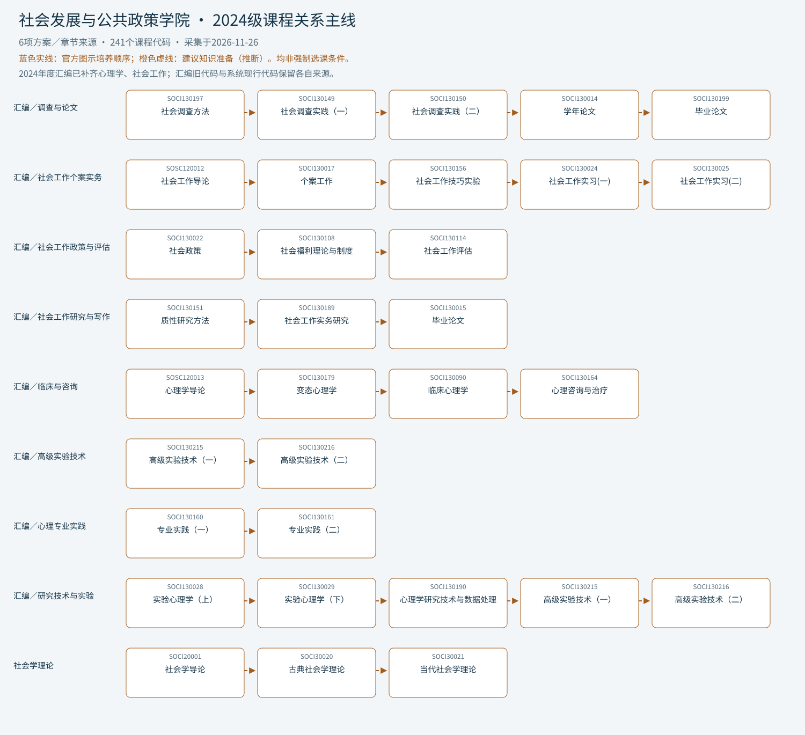

本年级含3份系统方案及年度汇编3个专业章节；两版课程代码分别保留，社会学来源有重叠。尚未核定强制先修。蓝色实线表示官方原图的培养顺序，橙色虚线是推断的知识准备，灰色点线是内容联系。
点击节点继续查看；前后关系与内容联系均列在下方。无连线表示资料不足，不代表没有先修。长图可在框内滚动。
主线图是选取的学习路线，不是全部先修条件。官方原图保留原始版面，不能仅按上下位置连边。

完整JSON · 节点CSV · 关系CSV · 待补关系 · 方法说明